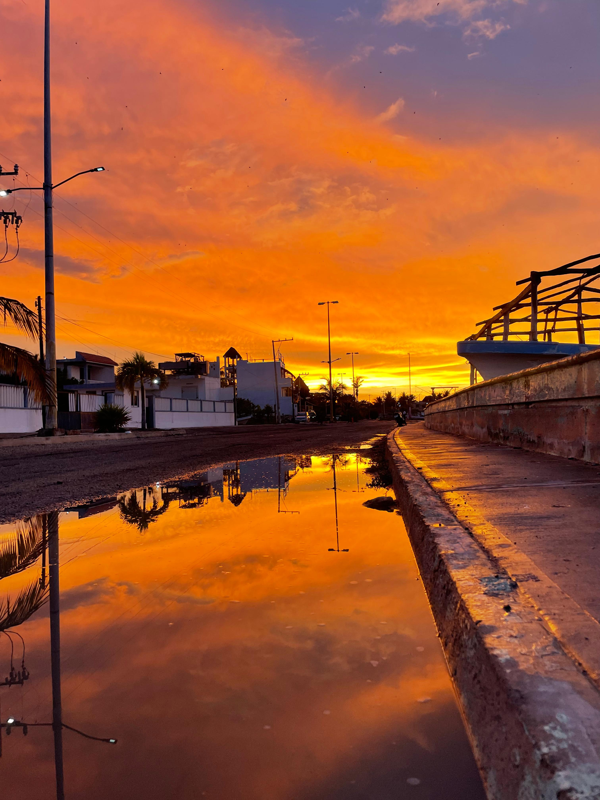

WELCOME TO MY WORLD
Un poco sobre mí
¡Hola! Bienvenido a mi página web. Aquí puedes conocer un poco más sobre mí, mis intereses, las personas importantes para mí y algunas de las cosas que forman parte de mi vida. Mi nombre es Jazmín, encantada de conocerte.


Explora mi espacio
¿Quieres conocer un poco más sobre mí? Puedes visitar mi autobiografía, donde cuento más sobre mis intereses, gustos y mi vida académica.
También puedes conocer a algunas de las personas que forman parte de mi vida en mi galería.
Si quieres ponerte en contacto conmigo, puedes hacerlo desde mi página de contacto.
Mis restaurantes favoritos
Una de mis actividades favoritas es salir a comer. Aquí te dejo algunas de mis recomendaciones de restaurantes.
- Itamae para el antojo de sushi.
- Proyecto B es mi lugar favorito para pastas.
- Te encantarán los boneless de Cafemaniacos.
Te comparto las ubicaciones de estos restaurantes.
Mis herramientas
Un par de utilidades que programé para esta página: un convertidor de monedas y una calculadora.
Convertidor a pesos
Calculadora
Mis redes y contacto
Si quieres ponerte en contacto conmigo, puedes escribirme a mi correo personal .
También puedes encontrarme en Instagram .